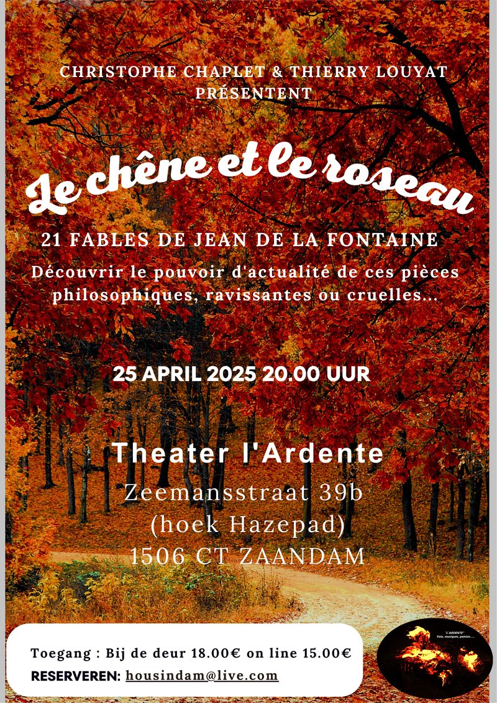

Christophe Chaplet & Thierry Louyat
ReprésentationsVoorstellingenPerformances
25.04.2025Vendredi · 20 hVrijdag · 20.00Friday · 8 pm
Théâtre l’Ardente
Zeemansstraat 39b, Zaandam
Zeemansstraat 39b, Zaandam
Accueillir le spectacleDe voorstelling boekenBring the show to your venue
Théâtres, centres culturels, Alliances françaises, écoles : contactez-nous pour une représentation.
Theaters, culturele centra, Alliances Françaises, scholen: neem contact op voor een voorstelling.
Theatres, cultural centres, Alliances Françaises, schools: get in touch to arrange a performance.
Nous écrireNeem contact opGet in touch
Captations audiovisuellesVideo-opnamesVideo recordings